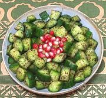

|
Kurdish Cucumber SaladIran - Kurdistan | ||||
| Serves: Effort: Sched: DoAhead: |
3 * 1 hr Yes |
This is a simple appetizer salad, sufficient for 2 to 4 persons. Here in Southern California we're accustomed to using fresh mint, but through Anatolia, Caucasus and Persia dried is preferred, except on the herb plate. | |||
|
|
14 1/2 1/2 1 |
oz t t t |
Cucumbers (1) Salt Mint, dried Sumac, ground (2) |
Make: - (1 hrs - 5 min work)
|